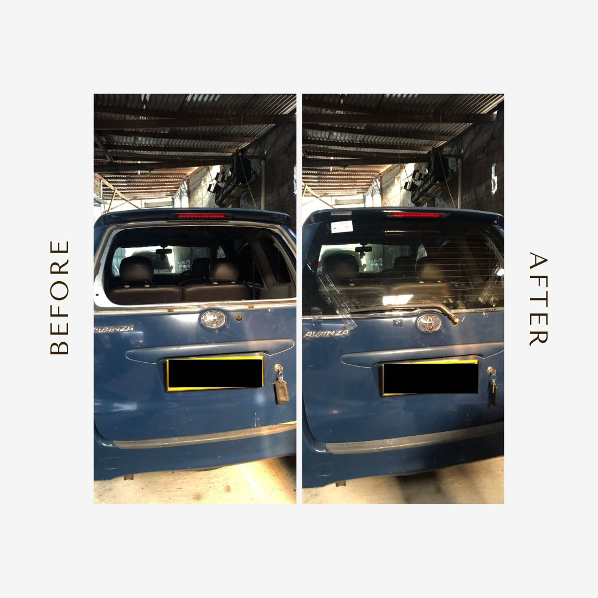
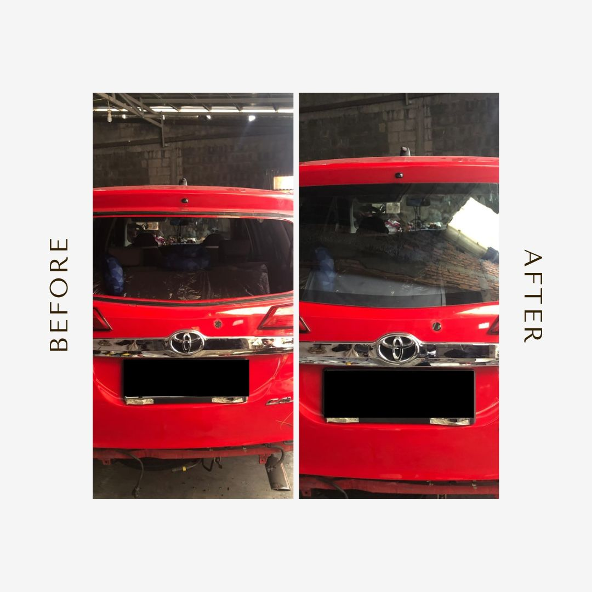

Kaca Mobil Anda Pecah? Kami Siap Membantu!
Layanan Home Servis Cepat, Bergaransi 7 Bulan, dan Pengerjaan hanya 1.5 Jam dengan Lem Kaca Anti Karat.
Klik untuk Panggil Kami SegeraKeunggulan Layanan Kami
-
Kaca Mobil Orisinil & Bersertifikasi SNI ›Kami menyediakan pilihan kaca mobil orisinil atau OEM dari merek-merek terbaik (Asahimas, FY, XYG, Mulia).
-
Garansi 7 Bulan Kebocoran ›Setiap pemasangan kaca bergaransi untuk memberikan rasa aman kepada Anda.
-
Lem Anti Karat ›Kami hanya menggunakan lem khusus yang tidak berbau dan anti-karat.
-
Home Servis Cepat ›Tidak perlu datang ke bengkel, kami akan datang ke lokasi Anda dengan servis maksimal.
-
Pengerjaan 1.5 Jam ›Efisiensi dan kecepatan pengerjaan tanpa mengorbankan kualitas pemasangan.
Pertanyaan yang Sering Diajukan
Apakah kaca mobil yang digunakan orisinil?
▼
Ya, kami menyediakan kaca mobil orisinil dan juga OEM bersertifikasi yang telah terbukti kualitasnya.
Berapa lama waktu pemasangan kaca mobil?
▼
Rata-rata pemasangan kaca mobil kami hanya memakan waktu 1.5 jam, sehingga Anda dapat segera menggunakan mobil kembali.
Apakah ada garansi setelah pemasangan?
▼
Ya, kami memberikan garansi kebocoran selama 7 bulan untuk semua pemasangan kaca mobil.
Apakah saya harus datang ke bengkel?
▼
Tidak perlu, kami menyediakan layanan Home Servis sehingga kami bisa datang langsung ke lokasi Anda.
Dokumentasi Pekerjaan Kami

Penggantian Kaca Belakang Avanza

Penggantian Kaca Belakang Calya